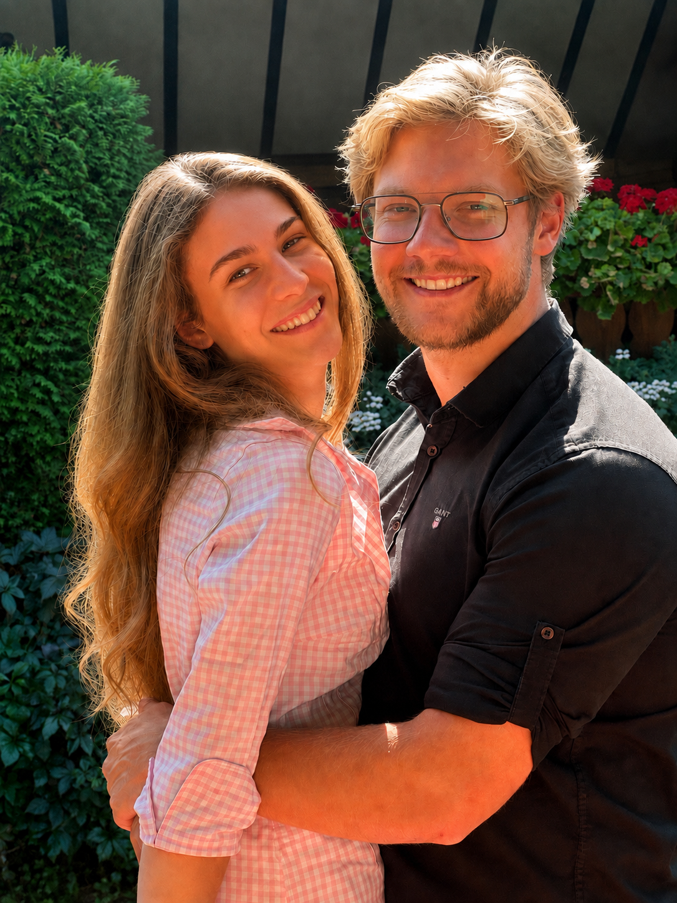
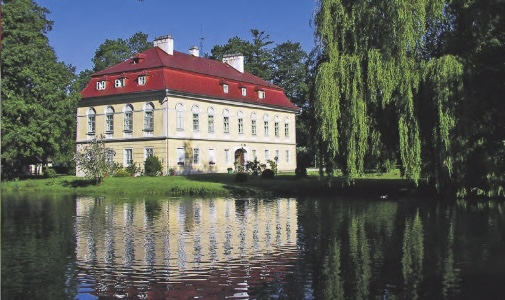
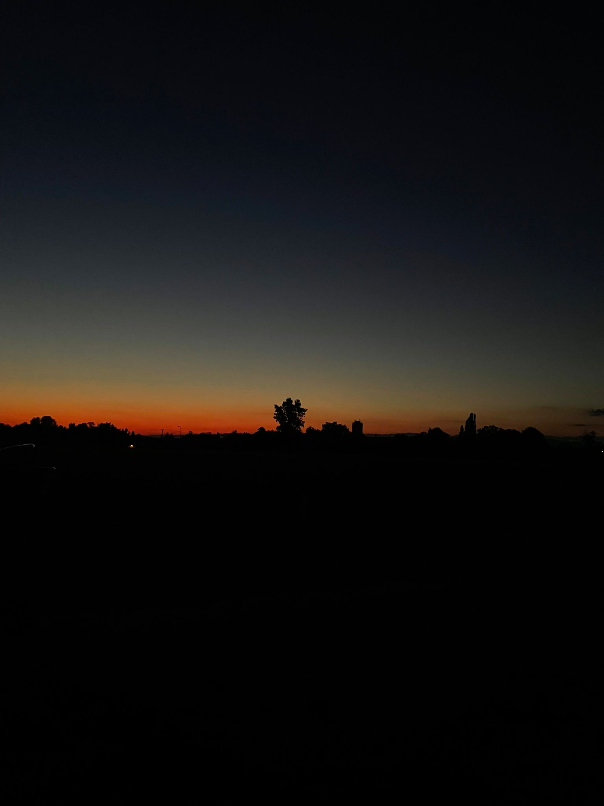
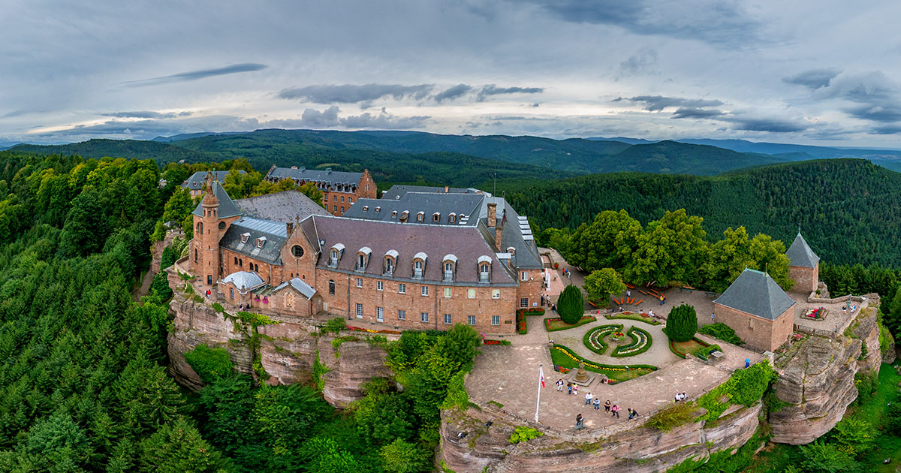
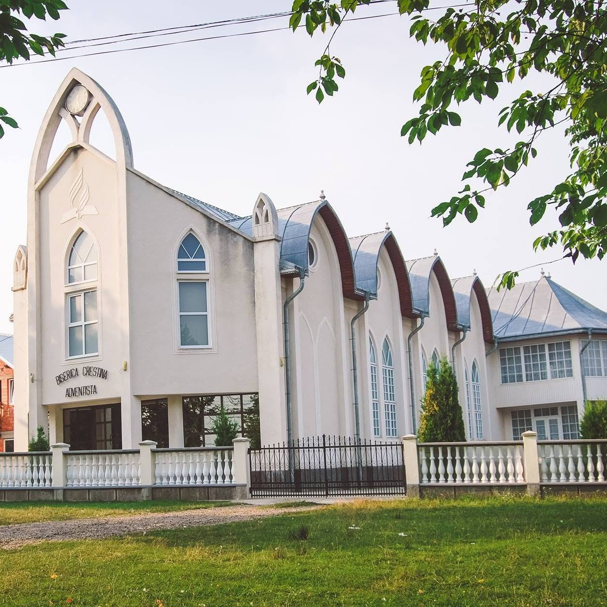

Cu bucurie în suflet, vă anunțăm că ne căsătorim!

Drumurile noastre s-au intersectat la Bogenhofen, iar ceea ce a început ca un simplu schimb de gânduri și zâmbete a devenit repede ceva special.
Într-o după-amiază însorită de mai, printre trandafiri și pe fundalul muzicii de harfă, conversațiile noastre au făcut ca timpul să se oprească în loc.

În amurgul serii, pe fundalul ciripitului de păsări, el a rostit întrebarea care avea să transforme două drumuri separate într-o singură poveste: „noi”.

Înconjurați de liniște, frumusețe și creația lui Dumnezeu, am spus «da» unui viitor împreună.

Cununia religioasă va avea loc la Biserica Adventistă de Ziua a Șaptea din Măriței, biserica în care Sara a copilărit. Pentru ea, este un adevărat popas de suflet, locul în care a visat mereu să pășească spre altar.
După nuntă, plănuim să ne mutăm la Viena, orașul în care Daniel s-a născut și a crescut și unde vom începe un nou capitol al vieții noastre. Privim cu recunoștință spre tot ce am trăit până aici și cu încredere spre drumul care ne stă înainte, știind că Dumnezeu va fi alături de noi la fiecare pas.